1.2. Adding 3D Forming operation
1.3. Simulation Controls settings
1.4. Load materials into Material list
1.9. Defining Inter-object relations
On a Windows machine, go to the  button select DEFORM-v1x.xxx (.xxx indicates version number E.g. v14.0.2) and select
DEFORM GUI Main v1x.x from the menu. The DEFORM GUI Main window will appear.
button select DEFORM-v1x.xxx (.xxx indicates version number E.g. v14.0.2) and select
DEFORM GUI Main v1x.x from the menu. The DEFORM GUI Main window will appear.
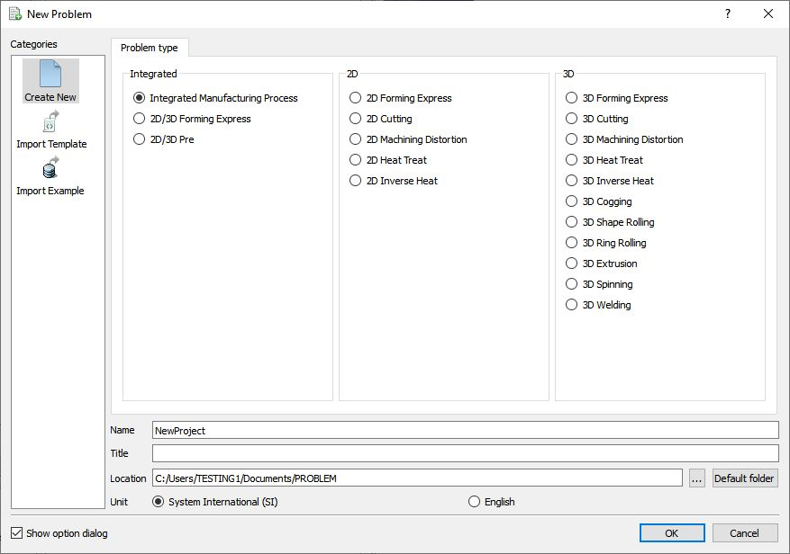
Creating New Project.
Create a new problem either by selecting File  New Problem or by clicking the New Problem
New Problem or by clicking the New Problem  icon. The Problem Setup window will appear. Select "Integrated Manufacturing Process" radio button and unit system as "SI" radio button in unit field as shown in Fig. 3DINDL1.1. Define Problem name as “3D_Induction_Heating " and make sure the “Show option dialog” check box is turned on (if we do not turn on the “Show option dialog” check box, then we will not get the
New Project dialog in MO UI). Then click on
icon. The Problem Setup window will appear. Select "Integrated Manufacturing Process" radio button and unit system as "SI" radio button in unit field as shown in Fig. 3DINDL1.1. Define Problem name as “3D_Induction_Heating " and make sure the “Show option dialog” check box is turned on (if we do not turn on the “Show option dialog” check box, then we will not get the
New Project dialog in MO UI). Then click on  button to open a new Problem using the Deform Integrated Manufacturing Process.
button to open a new Problem using the Deform Integrated Manufacturing Process.
Multiple operation wizard will open with the New Project dialog, at this point user will be prompted to specify a project name (system will create a separate folder with this project name) and title for this session. In this session we will
use “3D_Induction_Heating" as the project name. Click on  to continue to open the operation. MO wizard will open (see Fig. 3DINDL1.2.).
to continue to open the operation. MO wizard will open (see Fig. 3DINDL1.2.).
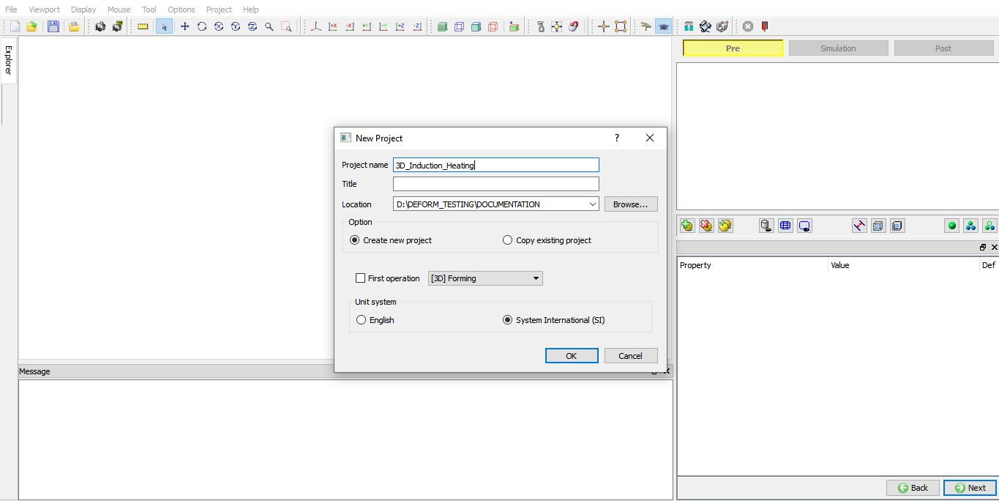
New Project settings from Integrated Manufacturing Process template.
Multiple Operation wizard will open, induction heating simulation will be set using Forming operation hence, add one 3D Forming operation from Explorer  Operations list
by clicking
Operations list
by clicking  button as shown in Fig. 3DINDL1.3.
button as shown in Fig. 3DINDL1.3.
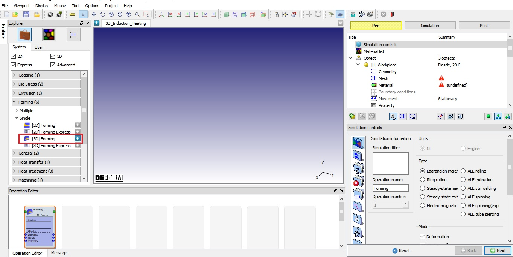
Adding 3D Forming operation into Operation Editor.
As we add 3D forming operation, Simulation controls page will be opened. In Simulation controls page, uncheck the Deformation check box. We have Resistance, Induction and Induction (BEM) types of Heating options, we will be using Induction type heating,
hence check the Heating check box and select Induction (See Fig. 3DINDL1.4.). Click
 to Material list page.
to Material list page.
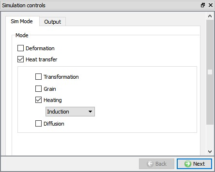
Simulation control settings for Induction Heating.
In Material list page, load the material from file AL-1100,COLD[70F(20C)].key available under /3D/LABS/Induction_Heating/Induction_Heating_Ex1. Simillarly, load the material from file coil.key and AIR.Key file. This can be done as shown in Fig. 3DINDL1.5. by clicking  button. Click
button. Click  to Objects page.
to Objects page.
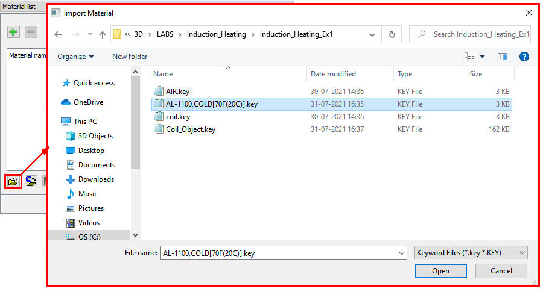
Loading required materials into Material list page.
For this lab we need 3 objects, by default 3 objects will be added in list when we add 3D Forming operation. If not added by default, then add 3 objects to objects list using  button.
Click
button.
Click  to Workpiece object page (See Fig. 3DINDL1.6.).
to Workpiece object page (See Fig. 3DINDL1.6.).
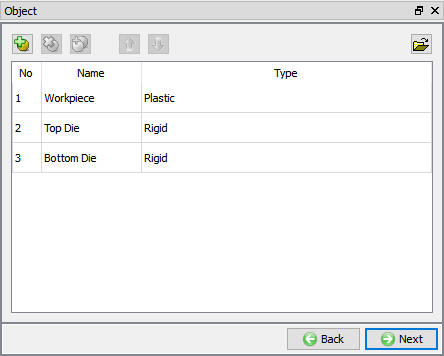
Adding required objects for Induction heating.
We will keep object name as “Workpiece”, object Temperature as 20°C and object type as “Plastic” as shown in Fig. 3DINDL1.7. Click  to Geometry page.
to Geometry page.
Workpiece object definition.
In Geometry page, click on “ link and create cylinder geometry with Diameter(2R) 200 and Height (H) 150 as shown in the
Fig. 3DINDL1.8. Click
link and create cylinder geometry with Diameter(2R) 200 and Height (H) 150 as shown in the
Fig. 3DINDL1.8. Click  button to close Geometry Primitive page.
button to close Geometry Primitive page.
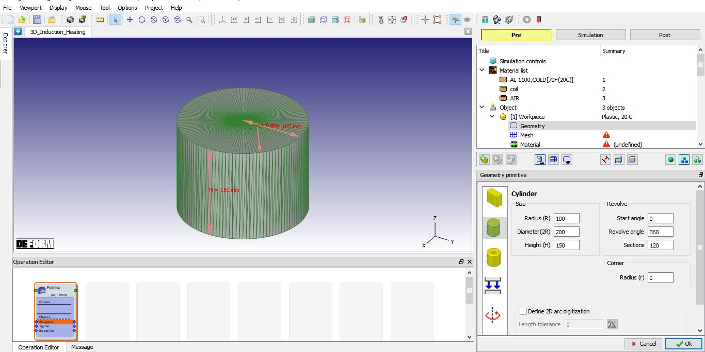
Defining Workpiece Geometry.
Defining Brick Mesh settings:
We will be generating brick mesh for Workpiece. To generate the brick mesh, click on the link in the geometry page. Select
the "Extrude" radio button. To define the start surface and end surface to extrude during mesh generation, select the icon "Selection mode" (  )
in the tool bar, select the Start surface, then pick up a top surface of the Workpiece, and click the button
)
in the tool bar, select the Start surface, then pick up a top surface of the Workpiece, and click the button  in the “Setup brick mesh” window to accept the definition (See Fig. 3DINDL1.9.).
Similarly, define the bottom surface of the Workpiece as End surface. Click the
in the “Setup brick mesh” window to accept the definition (See Fig. 3DINDL1.9.).
Similarly, define the bottom surface of the Workpiece as End surface. Click the  button to exit the brick mesh geometry setup. Click
button to exit the brick mesh geometry setup. Click  to Mesh page.
to Mesh page.
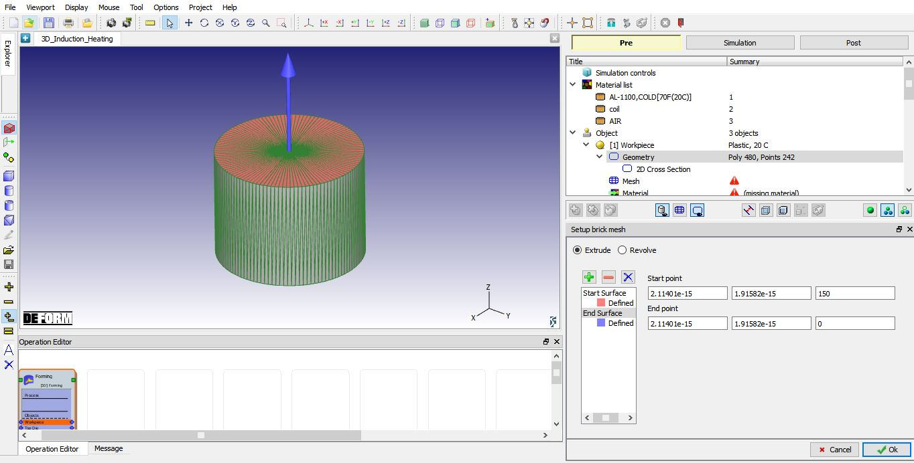
Brick mesh settings in geometry page.
Switch to expert mode using  to define brick mesh settings. From General tab of Mesh page, select the "Brick Mesh" radio button and "Uniform thickness"
radio button to generate uniform layers of mesh, set the "# of layers" as 20 Fig. 3DINDL1.10. In the "2D Cross Section" tab, set the Target number of elements as 500, Thickness elements as 4 and the Size ratio as
1 and then click on
to define brick mesh settings. From General tab of Mesh page, select the "Brick Mesh" radio button and "Uniform thickness"
radio button to generate uniform layers of mesh, set the "# of layers" as 20 Fig. 3DINDL1.10. In the "2D Cross Section" tab, set the Target number of elements as 500, Thickness elements as 4 and the Size ratio as
1 and then click on  button as shown Fig. 3DINDL1.11. Click
button as shown Fig. 3DINDL1.11. Click  for Default Boundary conditions popup to assign default BCC. Once mesh is generated, click
for Default Boundary conditions popup to assign default BCC. Once mesh is generated, click  to assign material.
to assign material.
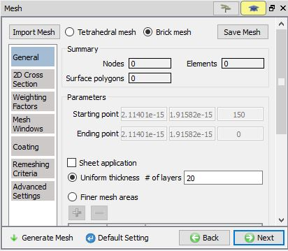
Brick mesh settings for Workpiece.
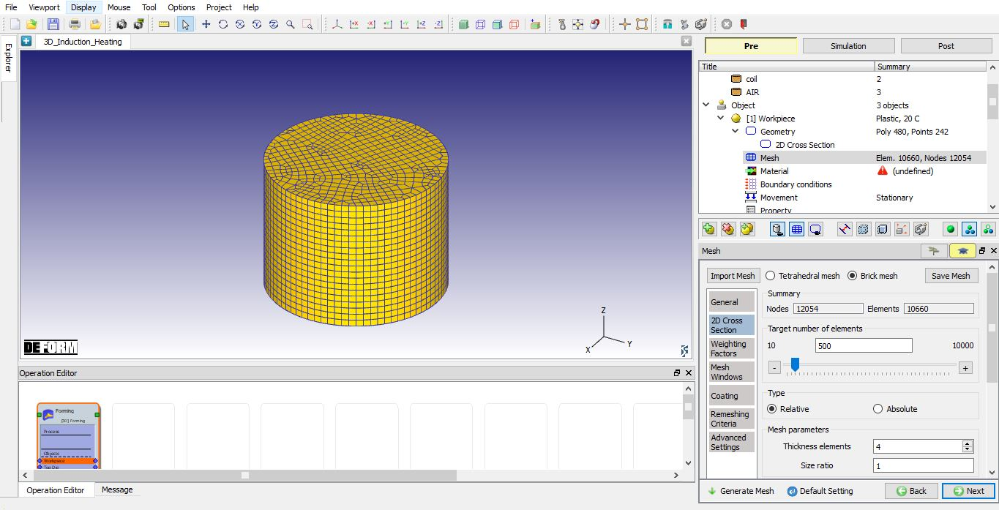
2D Cross Section mesh settings for Workpiece.
Click on the AL-1100 COLD[70F(20C)] in the material window to assign the material to the Workpiece as shown in Fig. 3DINDL1.12. Click  until Top die object page.
until Top die object page.
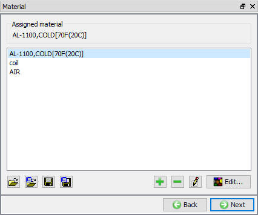
Assigning Material to Workpiece.
In Top Die page, change the Object name to Coil. Using  option, import Coil_Object.key from \3D\LABS\Induction_Heating\Induction_Heating_Ex1 folder. The imported
COIL.key is having COIL geometry along with mesh data as shown in Fig. 3DINDL1.13. Since, we don’t need to generate geometry and mesh,
we will navigate using
option, import Coil_Object.key from \3D\LABS\Induction_Heating\Induction_Heating_Ex1 folder. The imported
COIL.key is having COIL geometry along with mesh data as shown in Fig. 3DINDL1.13. Since, we don’t need to generate geometry and mesh,
we will navigate using  until Material page.
until Material page.
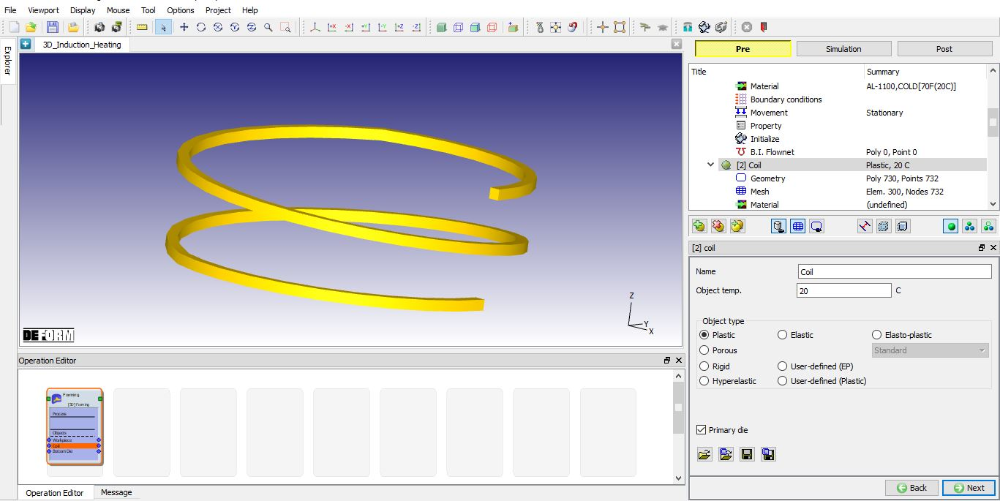
Defining Coil object.
Click on the coil in the material window to assign the material to the Coil as shown in Fig. 3DINDL1.14. Click
 to Boundary conditions page.
to Boundary conditions page.
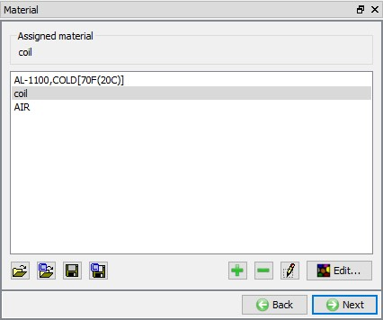
Assigning material to Coil.
Under Induction from BCC tree, select Coil Begin surface option and select Coil begin surface and assign using as shown Fig. 3DINDL1.15.
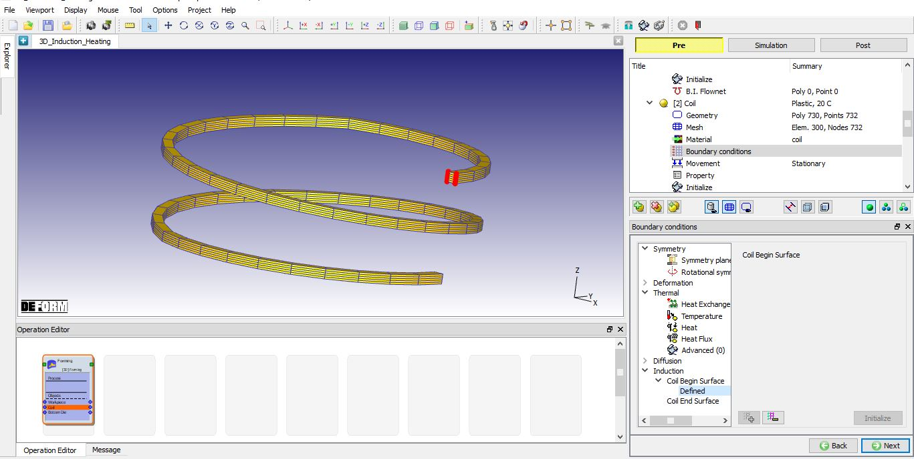
Defining Coil Begin Surface BCC.
Similarly, select Coil End Surface option under Induction BCC and select Coil end surface and assign using as shown in Fig. 3DINDL1.16. Click  until Properties page.
until Properties page.
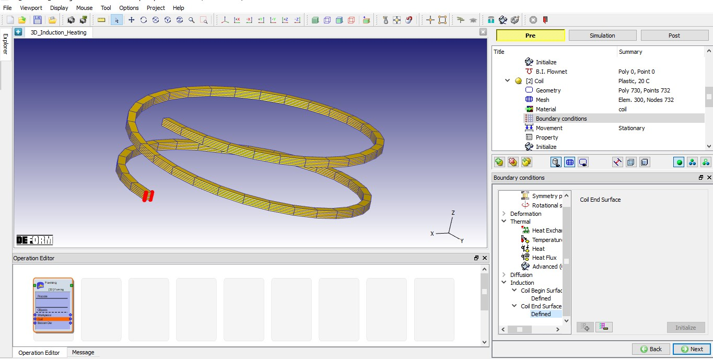
Defining Coil End Surface BCC.
In Property page under Heating tab, select Current frequency type as Single, define the current frequency as 2000 Hz and the Current density as 65 A/mm2
constant as shown in Fig. 3DINDL1.17. Click  to Bottom Die
page.
to Bottom Die
page.
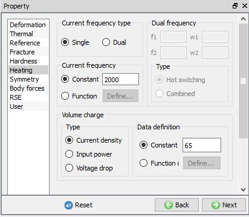
Defining Coil Properties
Change the Object name to “Air”, Object Temperature as 20°C and Object type “Rigid” as shown in Fig. 3DINDL1.18. Click  to Geometry page.
to Geometry page.
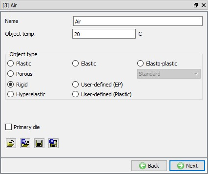
Air object definition.
Import the Air.geo file from /3D/LABS/Induction_Heating/Induction_Heating_Ex1 folder. The air geometry will be displayed as shown in Fig. 3DINDL1.19.
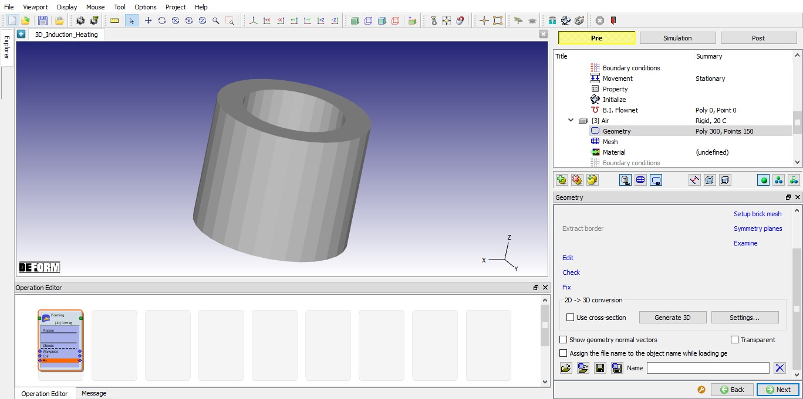
Imported Air Geometry.
We will be generating brick mesh for Workpiece. To generate the brick mesh, click on the link in the geometry page. We will revolve the 2D cross-section mesh, hence select
the "Revolve" radio button and “Full Revolve” to generate full cylinder as shown in Fig. 3DINDL1.20. Click the  button to exit the brick mesh geometry setup.
button to exit the brick mesh geometry setup.
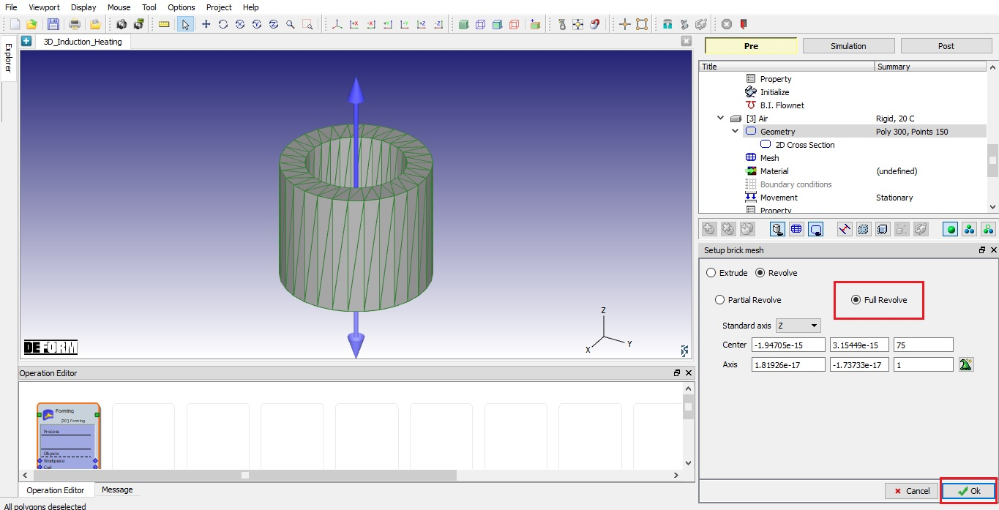
Brick mesh settings for Air object in geometry page
Switch to expert mode using  to define brick mesh settings. From General tab of Mesh page, select the "Brick Mesh"
radio button and "Uniform thickness" radio button, set the "# of layers" as 120. In the "2D Cross Section" tab, set the Target number of elements as
200, Thickness elements as 4 and the Size ratio as 1.as shown in Fig. 3DINDL1.21. Click
on
to define brick mesh settings. From General tab of Mesh page, select the "Brick Mesh"
radio button and "Uniform thickness" radio button, set the "# of layers" as 120. In the "2D Cross Section" tab, set the Target number of elements as
200, Thickness elements as 4 and the Size ratio as 1.as shown in Fig. 3DINDL1.21. Click
on  button and click
button and click  in Default Boundary conditions popup to assign default BCC as shown in Fig. 3DINDL1.22. Click
in Default Boundary conditions popup to assign default BCC as shown in Fig. 3DINDL1.22. Click  to assign material.
to assign material.
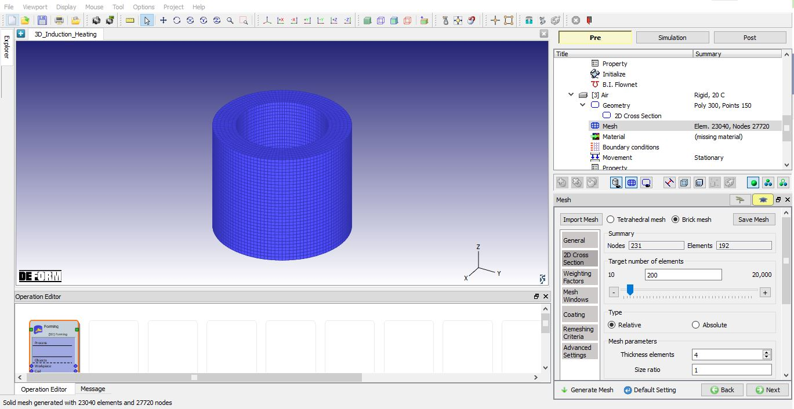
Mesh settings for Air object.
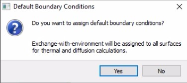
Default Boundary conditions pop-up.
Click on the AIR in the material window to assign the material to the Air object as shown in Fig. 3DINDL1.23. Click  to Contact page.
to Contact page.
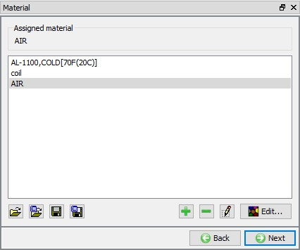
Assigning material to Air object.
The next step will be to generate contact between the various objects, make sure the Air is master to both the Workpiece and the Coil. So, click on  button 2 times to add two relations.
In first relation, select Air as Master and Coil as Slave and in second relation, select Air as Master and Workpiece as Slave. Click on
button 2 times to add two relations.
In first relation, select Air as Master and Coil as Slave and in second relation, select Air as Master and Workpiece as Slave. Click on  to auto estimate the tolerance and click on
to auto estimate the tolerance and click on  to generate contact for all the relationships, generated contacts between objects are as shown in Fig. 3DINDL1.24. Click
to generate contact for all the relationships, generated contacts between objects are as shown in Fig. 3DINDL1.24. Click  until Step controls page.
until Step controls page.
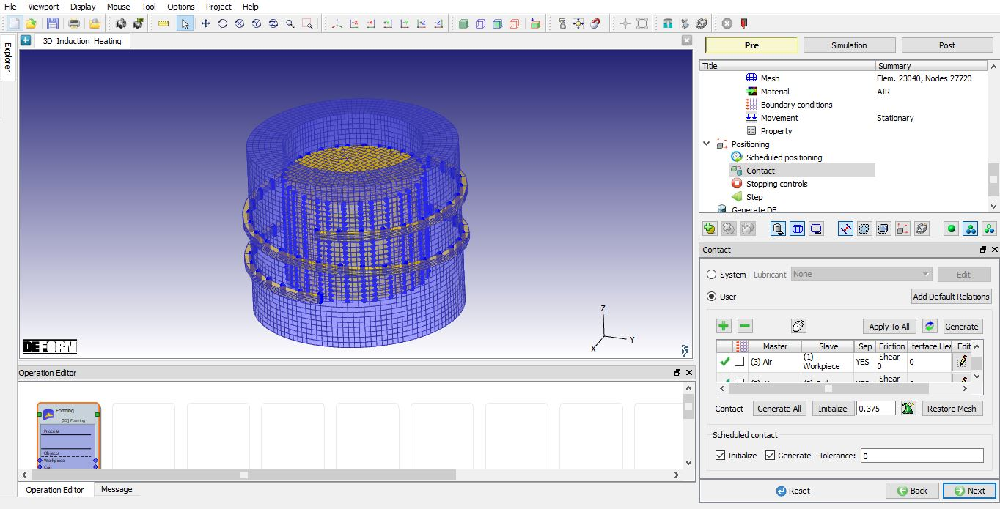
Inter-object relations settings and generated contacts.
In Step controls page, define Number of Simulation steps as 50 and Step Increment to save as 2. select Time as Solution step definition type and define constant 1 sec/step as step definition as shown in Fig. 3DINDL1.25. Click on  button to Generate Database page.
button to Generate Database page.
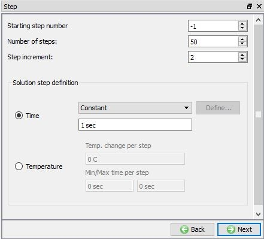
Defining Step controls for induction heating simulation.
In Generate DB page, click the  button to have the program check to see if anything was missed in the problem setup. During the checking process:
button to have the program check to see if anything was missed in the problem setup. During the checking process:
Messages in the red color
signify data that needs to be fixed before a simulation can be run (such as when you forget to define any material data).
Click on  button to generate the database.
button to generate the database.
Once the database has been generated, switch to the Simulation mode by clicking on  button above the operation tree. Click on the
button above the operation tree. Click on the  action label to open the Run Options dialog as shown in Fig. 3DINDL1.26. Use the default Continue Run option
to select “Continue from the last step” (from step -1) option and then select the Simulation mode as Interactive and click on
action label to open the Run Options dialog as shown in Fig. 3DINDL1.26. Use the default Continue Run option
to select “Continue from the last step” (from step -1) option and then select the Simulation mode as Interactive and click on  button to run the simulation.
button to run the simulation.
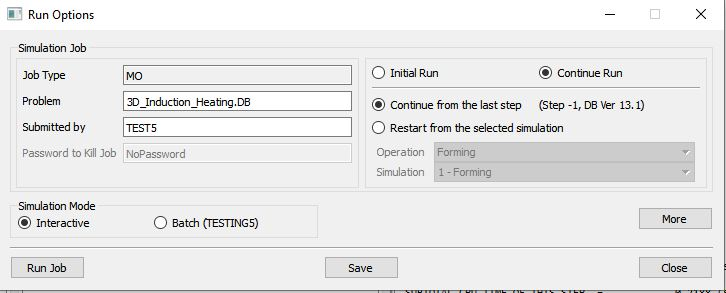
Run Simulation settings.
The progress of the simulation can be monitored as it is running by looking at the Simulation Message tab and Simulation Graphics from the Graphics display region in Simulation mode. if the  option is checked in Simulation Message tab, which is the default setting, the Message file will refresh automatically.
option is checked in Simulation Message tab, which is the default setting, the Message file will refresh automatically.
The Message file provides information about which simulation step the simulation is currently on and information dealing with how well the simulation is running
When the simulation is completed, review the results by switching to Post mode using the  button above the Simulation tool bar.
button above the Simulation tool bar.
In Step Browser, click on All button and plot Temperature state variable, observe the temperature distribution as shown in Fig. 3DINDL1.27.
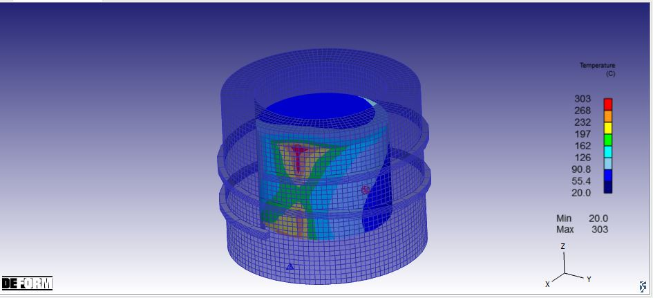
Temperature distribution at the last step